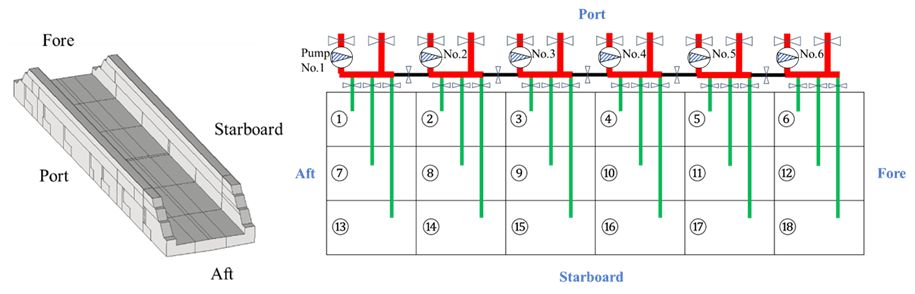

Dynamic analysis of the de-ballasting operations of a floating dock with a malfunctioning pump

Abstract
During normal de-ballasting operations for floating docks, each ballast pump independently manages a specific group of ballast tanks. However, when a pump malfunctions, a connection valve between the two groups of ballast water systems is opened. This allows the adjacent pump to serve as a helper pump, simultaneously controlling two groups of ballast water systems. This study explores a full-scale floating dock’s dynamic behaviours during the de-ballasting operations under this situation through a numerical model. In the developed numerical model, the dock is described as a six-degree-of-freedom rigid body which is subjected to hydrostatic, hydrodynamic, and mooring loads. A hydraulic model of the piping network of the malfunctioning pump and the helper pump is proposed. A modified P-controller regulates opening angles of all tank valves for minimal pitch and roll. Two configurations of the floating dock, i. e., a single floating dock and a floating dock with an onboard vessel, are considered. The numerical results show that the optimal helper pumps can be identified regarding the pumps’ total de-ballasting capacity and the dock’s stability. The most severe scenarios can be determined in term of the dock’s maximum draught differences caused by its roll and pitch. The observed maximum draught differences remain small relative to the dock’s width, indicating the effectiveness of employing helper pumps and the proposed automatic ballast control strategy for one-pump malfunction scenarios.
Read the published article ↗